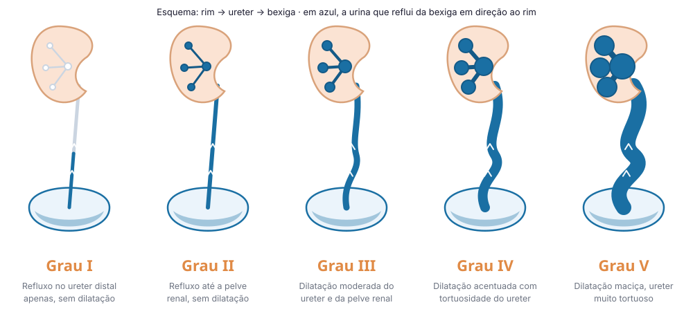

O que é refluxo vesicoureteral?
Em condições normais, a urina que é produzida nos rins segue um fluxo em apenas um sentido: rim → ureter → bexiga → uretra. A urina que chega até a bexiga não retorna ao rim graças a um mecanismo valvular (válvula anti-refluxo) que ocorre na junção do ureter com a bexiga.
No refluxo vesicoureteral (RVU) congênito, essa válvula não funciona adequadamente — e parte da urina retorna da bexiga para o ureter, podendo chegar ao rim durante a micção ou até mesmo no enchimento da bexiga. Isso permite que bactérias da bexiga subam até o rim, causando infecções urinárias com febre (pielonefrite) e que podem deixar sequelas — cicatrizes renais permanentes.
Como é diagnosticado?
Suspeita-se de RVU nos quadros de infecções do trato urinário de repetição (geralmente as que cursam com febre, pielonefrites), principalmente em crianças lactentes, ou ainda a partir de alterações na ultrassonografia do pré-natal (dilatação do rim — hidronefrose, sinais de duplicidade com hidronefrose, ureterocele, dilatação ureteral e alterações vesicais associadas a duplicidade pielocalicial).
O diagnóstico é confirmado através da uretrocistografia miccional — exame de imagem no qual é introduzido contraste na bexiga através de uma sonda/cateter e radiografias são tiradas durante o enchimento e esvaziamento da bexiga (micção).
Graus de refluxo vesicoureteral (classificação internacional)

Tratamento
A escolha do tratamento depende do grau do refluxo, da idade, do sexo, da história de infecções e da função renal:
Perguntas frequentes
De acordo com a Associação Americana de Urologia (AUA), o refluxo vesicoureteral pode desaparecer espontaneamente em 90% dos casos no grau I, e em 80% no grau II, após cinco anos. Já no refluxo grau III, a resolução espontânea é mais frequente em pacientes de menor idade e ocorre em até 60% dos casos. O RVU grau IV apresenta resolução espontânea de até 45%. Quando o RVU é bilateral, a taxa de resolução espontânea nos graus III e IV cai para 10%. O RVU grau V tem baixa taxa de resolução espontânea.
A profilaxia antibiótica diária é uma opção de tratamento — não a única. Muitas famílias optam pela injeção endoscópica para evitar o uso prolongado de antibiótico. A decisão depende do grau do refluxo, da história de infecções e da preferência da família, e deve ser discutida detalhadamente com a uropediatra.
Sim — e muito. Crianças com disfunção miccional podem gerar pressão vesical elevada, piorando ou perpetuando o refluxo. Tratar a disfunção miccional é parte essencial do manejo do RVU.
O refluxo vesicoureteral que cursa com quadros de pielonefrites de repetição e cicatrizes renais progressivas promove déficit de função renal. Caso esse ciclo se perpetue, esse déficit pode ser grave o suficiente para deteriorar a função renal global. Por isso, o objetivo do tratamento é prevenir infecções e monitorar a função renal.